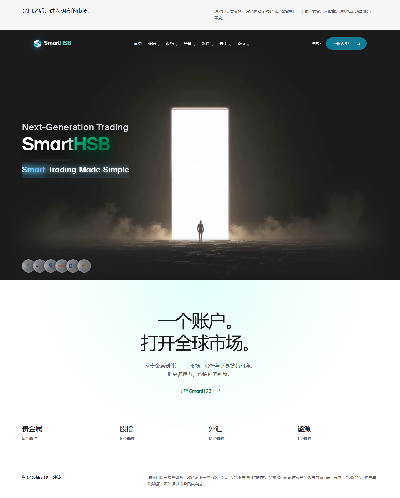
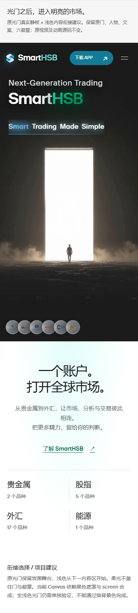
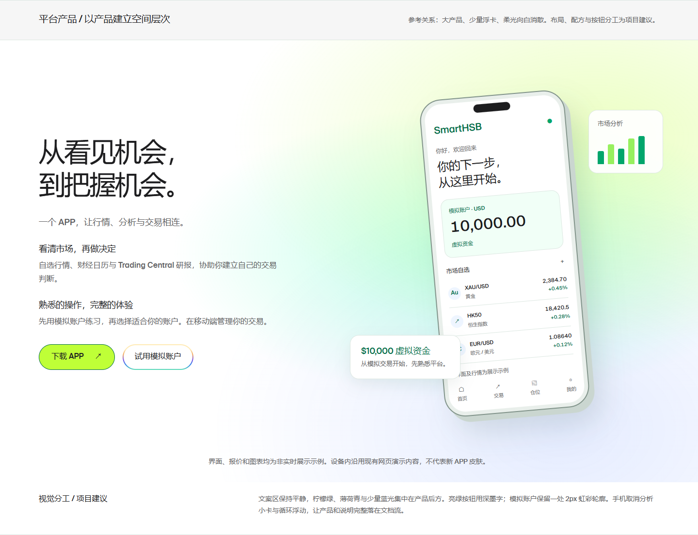
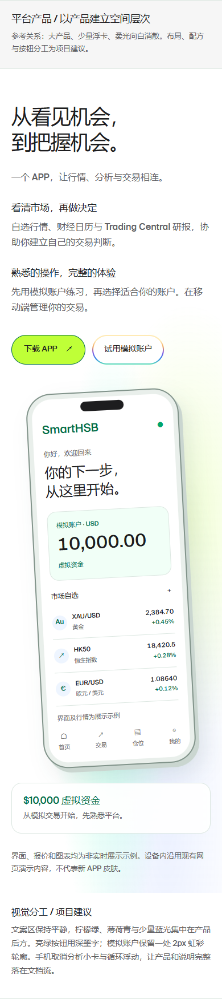
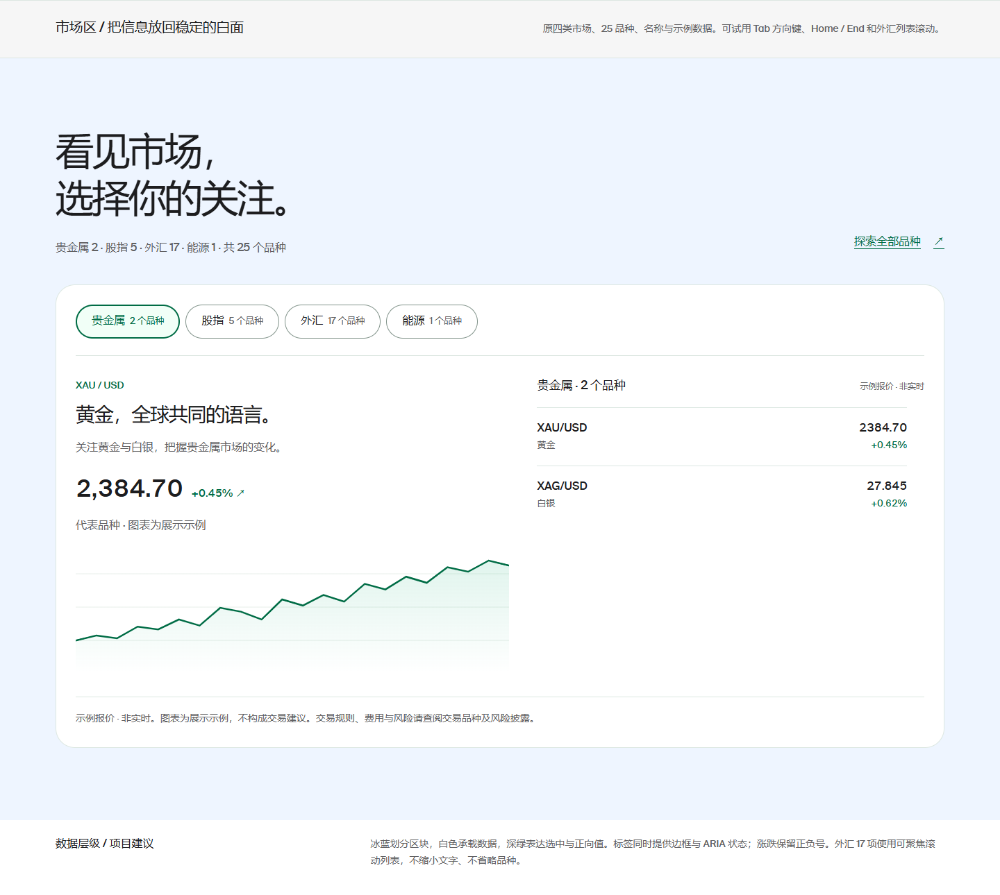
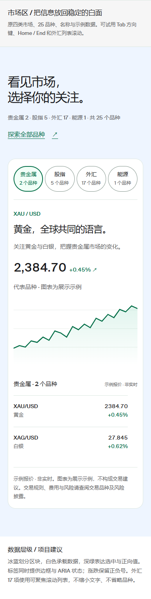

SmartHSB 桌面与手机画板
独立设计提案已公开；首页尚未实施。左侧 1440px，右侧 390px；点击画面可查看原尺寸。
光门与浅色内容衔接




平台产品区




市场区




界面、报价与图表为非实时展示示例。光门全浅色重合成尚未制作，当前方案保留原光门舞台。
独立设计提案已公开；首页尚未实施。左侧 1440px，右侧 390px；点击画面可查看原尺寸。






界面、报价与图表为非实时展示示例。光门全浅色重合成尚未制作，当前方案保留原光门舞台。